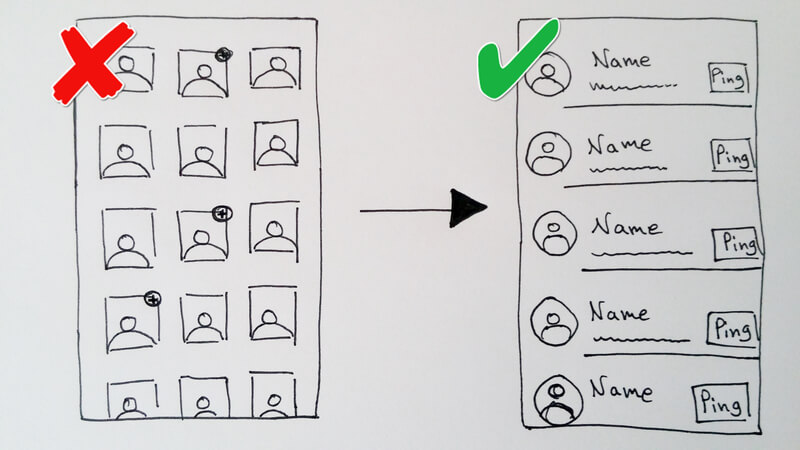

Hi, I'm Tali. I dreamed of becoming a UX designer way before I had ever heard of the profession.
In a past life, I was an eLearning specialist working in Israel.
My work in learning technologies has taught me a great deal about creating intuitive and effective interfaces.
I am currently pursuing an M.Sc. in Creative Digital Media,
with a focus on UX design and mobile development, at the Dublin Institute of Technology.
Feel free to have a look through my portfolio and reach out if you feel I can be of service to you.
Thanks for stopping by!

Where's Paul is the result of 2 assignments given by John Wood as part of the UI Design module I took during my masters. Initial conception and sketching were done in teams. My team members were David Knox, Sanette Tanaka and Zoe Stringer.
The support team for Widget Consulting needs to be notified each morning about how each employee
will be spending their working day.
Since many employees don’t notify the support team on their whereabouts and neglect to update their calendar,
the support team has to spend time each morning trying to track down all employees who are not at the office.
As an additional problem, the employees themselves don’t know where their co-workers are and whether they can be reached throughout the day.
The brief asks to create a mobile app for Widget Consulting,
that would assist primarily the support team (but also all other employees) in knowing what the daily status for each employee is.
By a process of interrogating the brief, and based on staff interviews, my team detected 4 major challenges which the design has to address. Here are the challenges and the solutions we found for them:
At this stage, the collaborative part of the assignment was complete, and each of us had to continue
working separately and design a high-fidelity prototype.
My team's initial concept used a "river of cards" layout for displaying the co-workers’ availability.
Each employee card, when tapped, would reveal additional details about that employee’s availability,
and would also display a ping button.
However, as I progressed through the process of wireframing and prototyping, it became evident to me that a traditional list layout would make for a preferable layout: with a list, the user would be able to perform all major tasks directly from the list-view, without having to tap on a colleague’s card to reveal those options.
Swoosh! is a casual mobile game I created together with my teammate David Harrington, as part of my masters. We worked on the game for an entire semester, presenting our progress and receiving feedback each week. I was in charge of the technical development of the game, whereas David was in charge of the visual assets, art style and audio.
TL;DR - We created a mobile game in 12 weeks. Our game was based on the mechanics of an existing game called "Dragon, Fly!". We were successful in overcoming a major technical issue (lack of pixel-perfect collision in GameSalad) and completed the project on time.
Our task was to pick an existing mobile game and create our own version of it.
To keep the focus on the design and production process (e.g. agile development and good teamwork) rather than on coding,
we were requested to build the game using the
GameSalad authoring tool.
We had 12 weeks to develop, design and publish the game on the play store.
We chose to recreate a lovely game called
"Dragon, Fly!",
in which the player controls a baby dragon attemting to escape from its mother.
Being too small to fly, the baby dragon "swooshes" through valleys,
gaining momentum with every successful swoosh. Once the mother catches up with it, the game is over.
The aim of the game is to progress as much as one can before getting caught.
The game essentially consists of a curvy terrain of hills and valleys,
and a player character swooshing between them.
Sounds simple enough, right? We thought so too.
We decided to reimagine "Dragon, Fly!" as a Halloween themed game. Instead of a baby dragon escaping its mother, we had a witch escaping an angry mob.
It soon became evident that we had chosen the wrong game-concept for the GameSalad platform. You see, GameSalad does not support pixel-perfect collision, meaning we had no way of making our witch collide perfectly with the curvy terrain of the mountains. By the time we realized the severity of this problem it was too late to select a different game. We searched online forums far and wide for a solution to our issue, only to read again and again that it simply can't be done in GameSalad.
Who cares about pixel-perfect collision anyway?
GameSalad treats all objects as either rectangle or circle shaped. This often makes for awkward situations when those objects touch (collide). We would have much prefered to have pixel-perfect collision, which would mean for the game engine to treat the object as the irregular shapes that they are, and allow for a more natural and precise collision between them based on their real boundaries.
And then I stumbled upon this gem:

Manto, a member of the GameSalad community, found a workaround for the pixel collision issue and had
posted his solution
on the GameSalad forum.
Essentially, his idea was to create lots of tiny transparent rectangles, and place them side by side in
slightly different angles along the conture of the terrain image,
in a way that would create the illusion of one continuous curvy line.
Since these were all individual (albeit tiny) linear surfaces, an object (say, a swooshing witch) could
collide with each of them.
This solution still was far from sufficient for us (read on to find out why), but it gave me hope and inspiration.

Since our game is a never-ending horizontal scroll game, having a curvy line all the way through necessitated creating
lots and lots of those rectangular-shaped objects ("actors" in GameSalad speak)
which proved to be too costly in terms of memory and cpu, resulting in very poor performance.
For example, in order to create just one (36 mountains long) level, we needed to have about 1,080 rectangle actors,
each of them demanding their own physics simulation!
In addition, since positioning these rectangles manually was not feasible,
I had to come up with a way of shaping them into mountains automatically.
In order to avoid the need to manually place all of the tiny lines as to create the mountainy terrain, I created a tool in Excel that allowed me to define formulas for particular "mountains" and then to generate coordinates for the appropriate line actors. I used a sequence of sine waves with different amplitudes and wavelengths to create various mountains. Then I imported the coordinates into GameSalad, and created the complementary logic to randomly compose a terrain out of these "mountains", with an increasing degree of difficulty for each level.

Since creating the entire mountainy terrain in advance required spawning thousands upon
thousands of tiny rectangles, which were weighing down performance, my second challenge was to reduce the number of
rectangles used at any given moment to the bare minimum.
This technical necessity made me rethink the very design of the game,
and I eventually decided to make the terrain appear gradually as the gameplay progressed.
This feature was well received in testing, as players commented that the constantly advancing terrain adds a sense
of magic, as well as making for a slightly more challenging experience (since the player cannot plan far ahead for
where they would land the witch).

In addition, I made sure to eliminate all rectangles the second they became invisible to the player. This was the result:
Throughout development and graphic design, we have user-tested our game and made changes accordingly. The most notable changes we made had to do with the witch's movement (speed and height of leaping), choice of music, and color and contrast.
We have completed our game on time and published it on the play store.
StudyBuddy (working title) is a productivity app designed to assist high-school students in their study for the leaving cert. It is the final project for my masters degree in Creative Digital Media, and I'm working on it together with my teammate Róisín O'Keeffe.
Feel free to check out our project's proposal document and stay current on our progress on our blog.